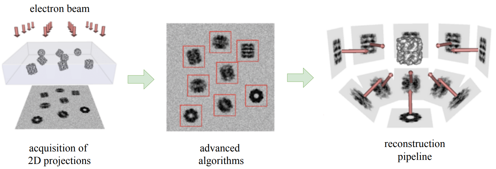
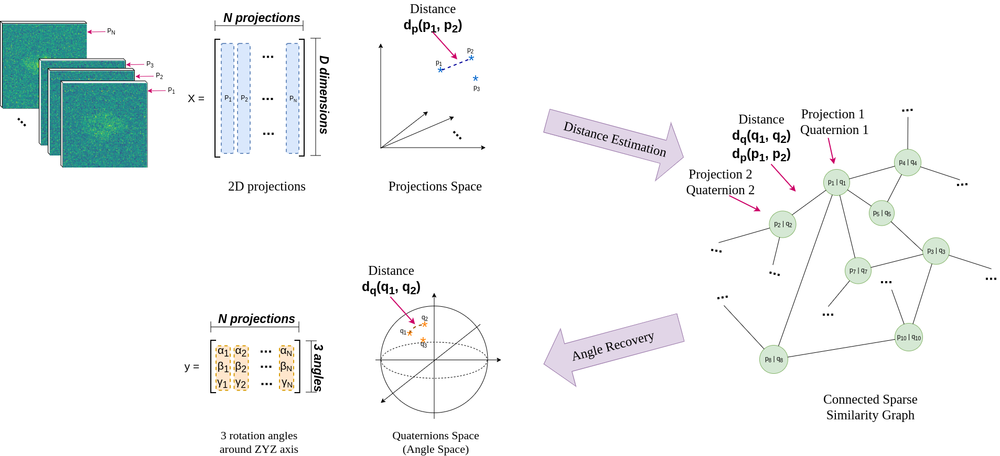

Protein 3D Poses Recovery¶
3D Poses Recovery in Single-Particle Cryo-EM from Learned Pairwise Projection Distances
The topic of this project is to learn pairwise projection distances in order to recover the angles at which we imaged these 2D projections from a given 3D protein.
Summary¶
Single-particle cryo-electron microscopy (cryo-EM) is a technology that allows the observation and the high-resolution 3D structure determination of biomolecules. In this project, the goal is to estimate the angles at which we imaged the 2D projections from a given 3D protein (cf illustration bellow). We developed deep learning models to estimate the angles from learned pairwise projection distances. We designed a two-step method: 1) distance estimation using a Siamese neural network to learn the distance between pairs of projections, and 2) angle recovery that includes a minimization scheme in order to estimate the angles at which each projection was taken. The current results obtained are discussed depending on different combination of approaches used andexperimental conditions. 
General Flow¶
General flow of the project can be seen in the illustration bellow: 
Report¶
More details on the implementation can be found in the report.
The presentation slideshow can be found on this link and the presentation material on this link.
Repository¶
This repository contains scripts to generate a huge amount of 2D projections with corresponding angles of 3D volumes. Also, it contains the notebooks with different combinations of project approaches.
Installation¶
First, download and install Anaconda on your machine, link here. Note: the project was developed with Python 3.6+.
Then open the terminal and type following:
# clone the repo
$ git clone https://github.com/JelenaBanjac/protein-reconstruction.git
# position yourself inside the project
$ cd protein-reconstruction
# create environment
$ conda env create -f environment.yml
# activate environment
$ conda activate protein_reconstruction
Now you are able to use the code and run the notebooks you wish!
[Optional] Test if some dependencies are installed:
# tensorflow check
$ python3 -c "import tensorflow as tf; print(tf.reduce_sum(tf.random.normal([1000, 1000])))"
# o/w install with:
$ pip3 install tensorflow-gpu
$ pip3 install tensorflow-graphics
# astra toolbox check
$ python3 -c "import astra;astra.test_CUDA()"
Package versions¶
The following versions of the packages are used in the project.
python-3.6.8
cudnn-7.1.3
cudatoolkit-8.0
cuda 10
cuDNN 7
nvidia driver 415
$ nvcc --version
$ cat /usr/local/cuda/include/cudnn.h | grep CUDNN_MAJOR -A 2
Logbook¶
Notes taken during the project development:
Team¶
Student:
Jelena Banjac, jelena.banjac@epfl.ch, Data Science Master Student
Supervisors:
Laurène Donati, laurene.donati@epfl.ch, BIG, EPFL
Michaël Defferrard, michael.defferrard@epfl.ch, LTS2, EPFL
Professor:
Michaël Unser, michael.unser@epfl.ch, BIG, EPFL